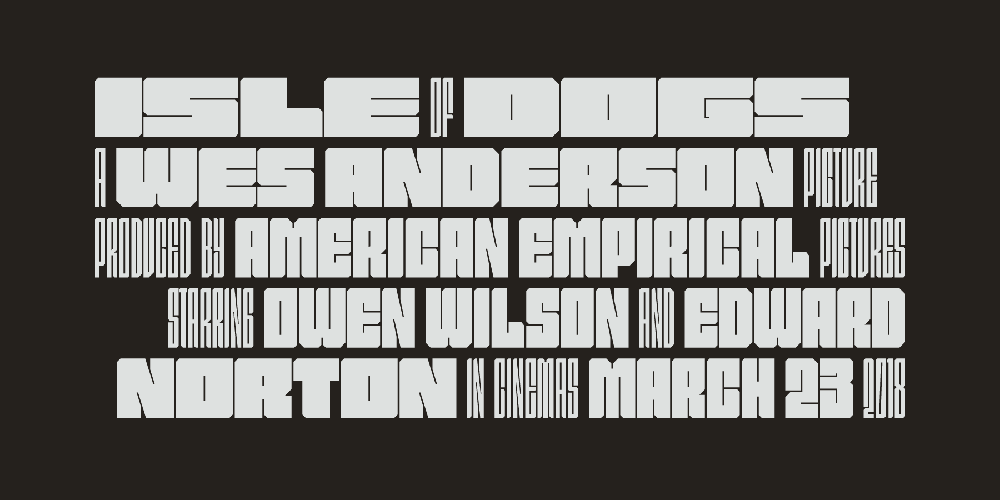

An experimental variable font with extreme width contrast (2018)
The original brief for this typeface was to create ‘the logo for a sci-fi dystopian megacorporation’. The concept was subsequently expanded to become a variable font, with a single weight/width axis.
This design was used in the cartridge art for Nominal, my 2018 Famicase entry.

Specimen · Various weights/widths of Heliumgold.